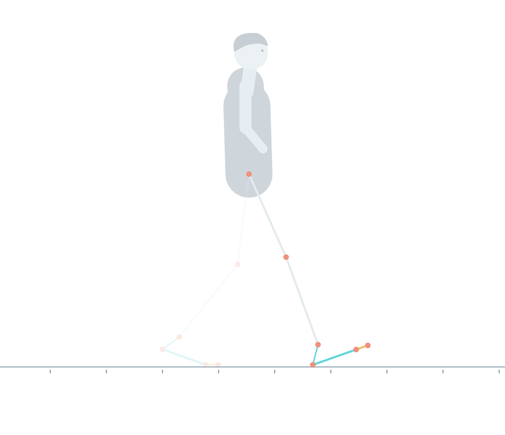
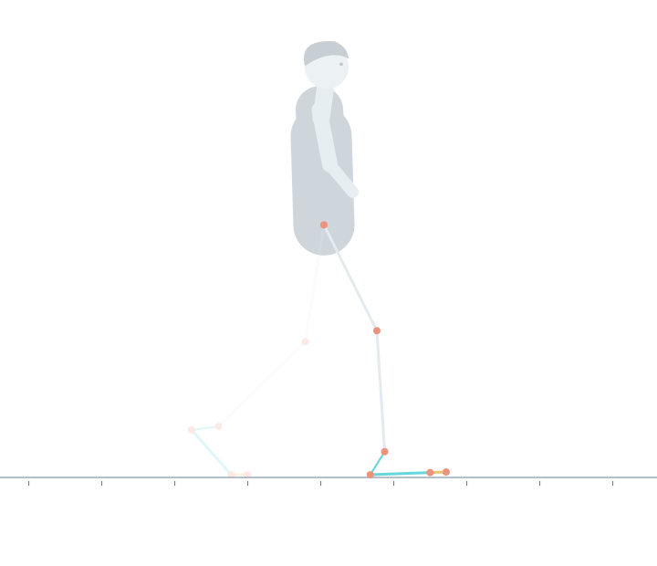
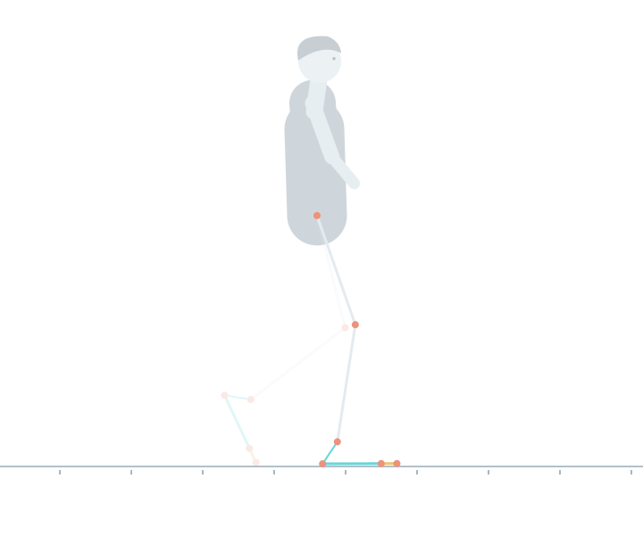
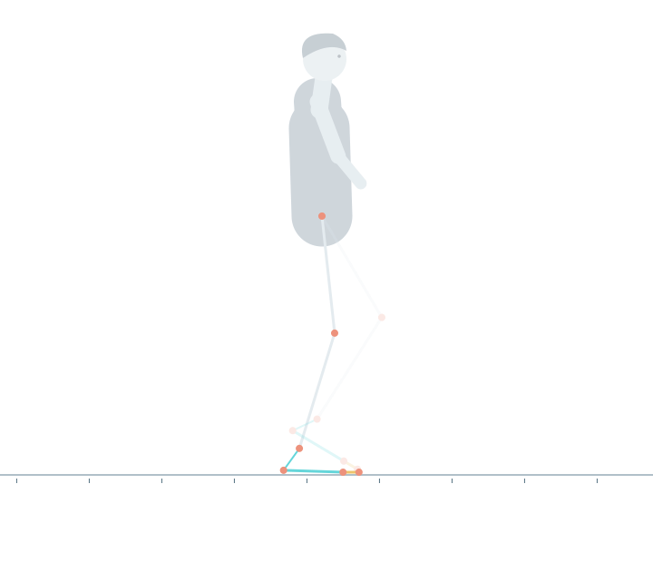
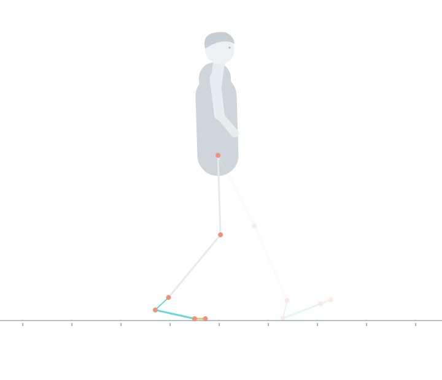
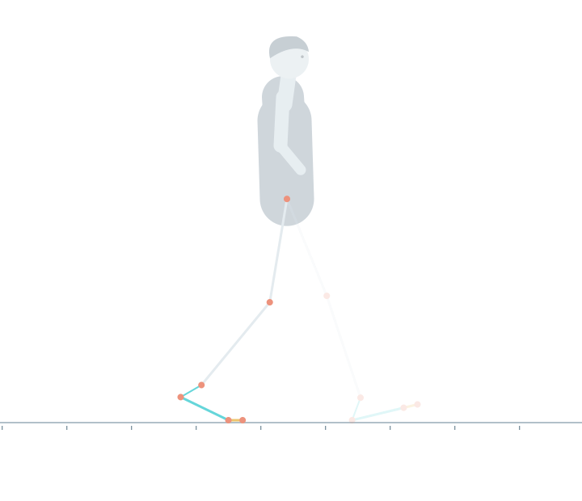
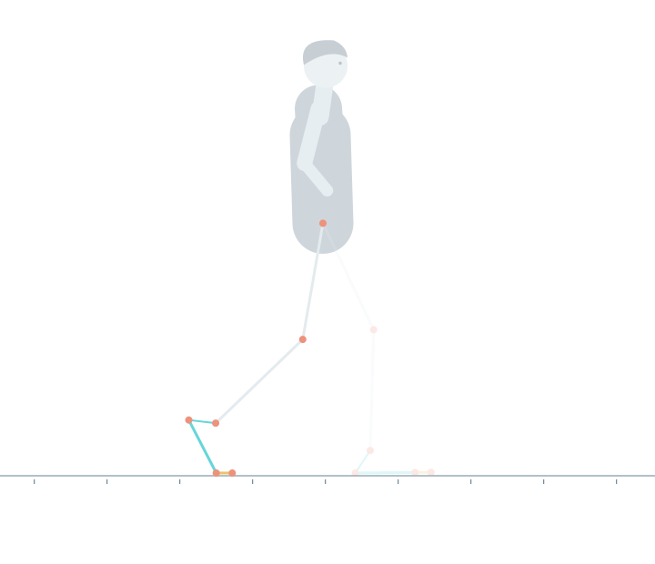
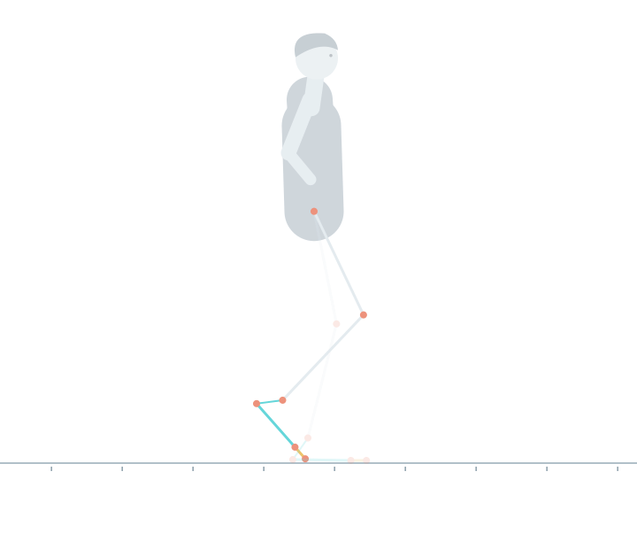
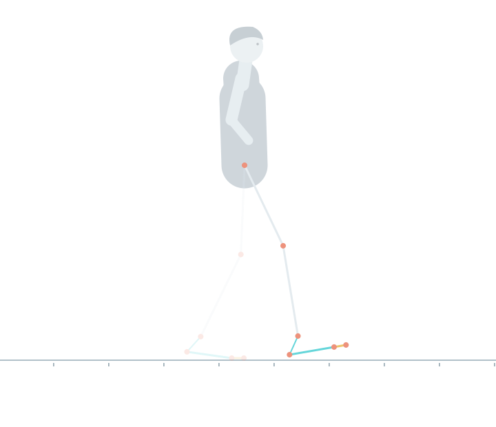
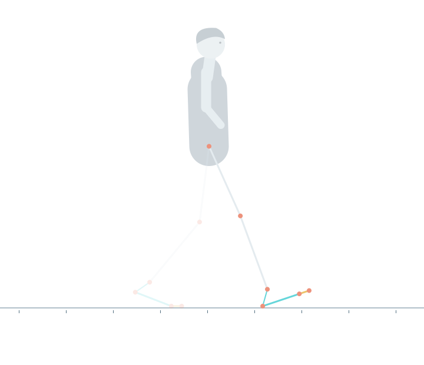

Lokale bewegingscontrole
De stap, uitgekleed.
Dezelfde rig als in het verhaal. Botlengten blijven constant. De bewerkte bronbeweging en contactmomenten zijn beschreven in het manifest.









